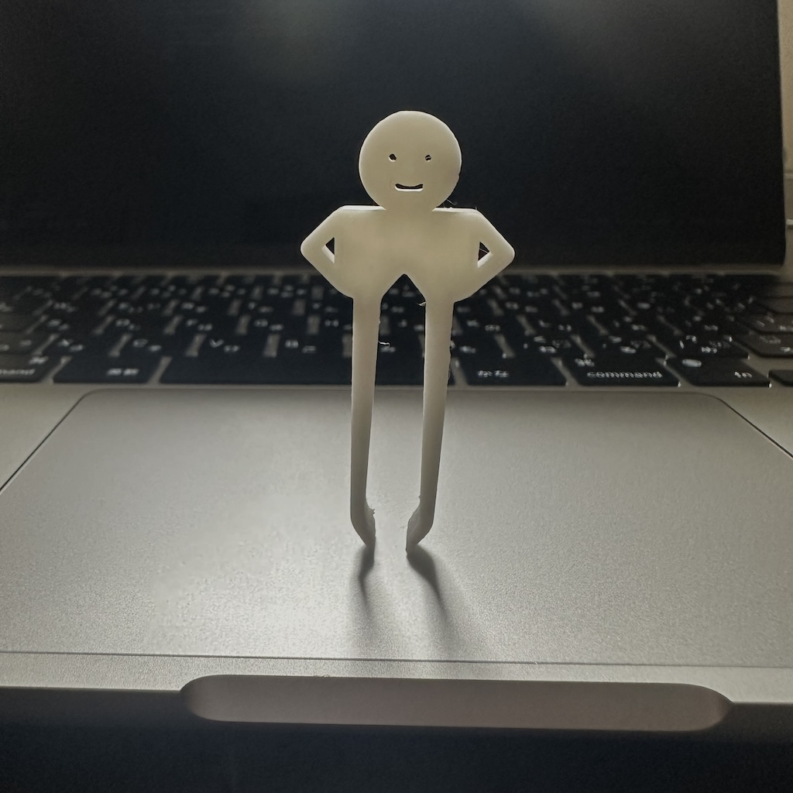
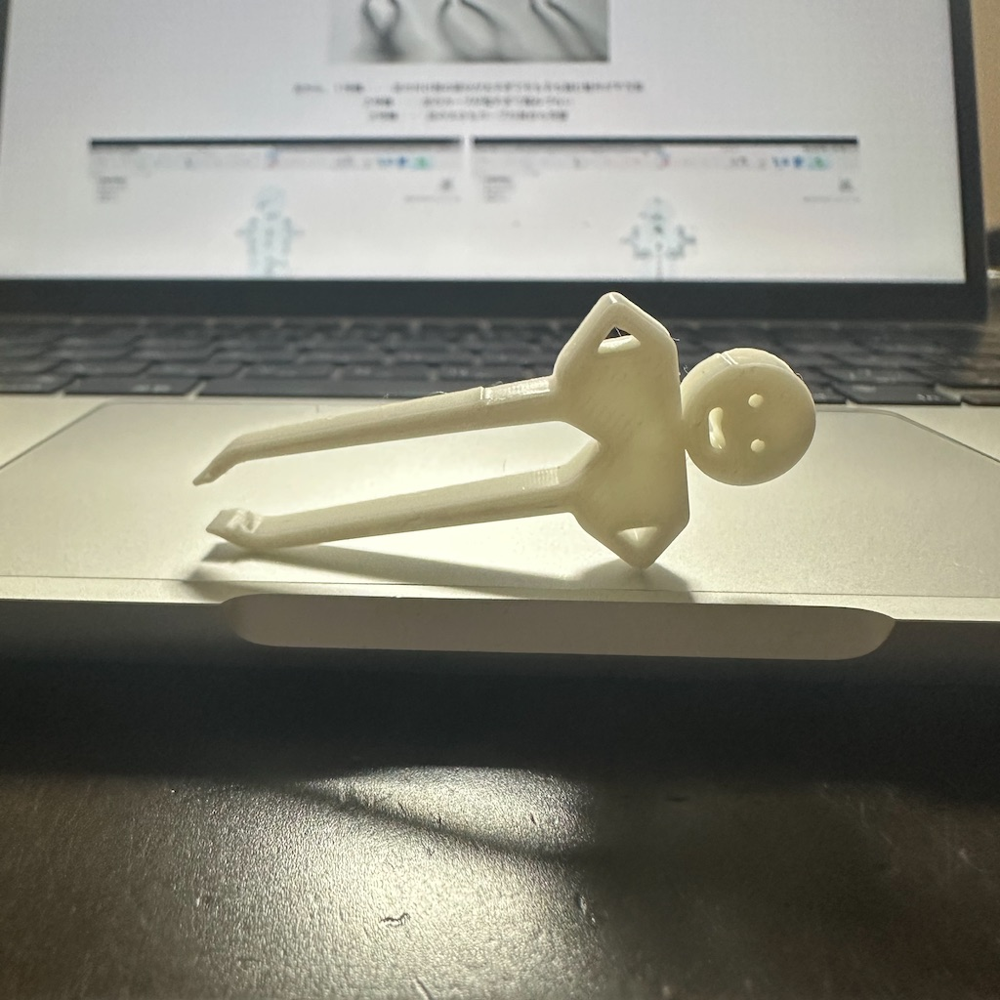
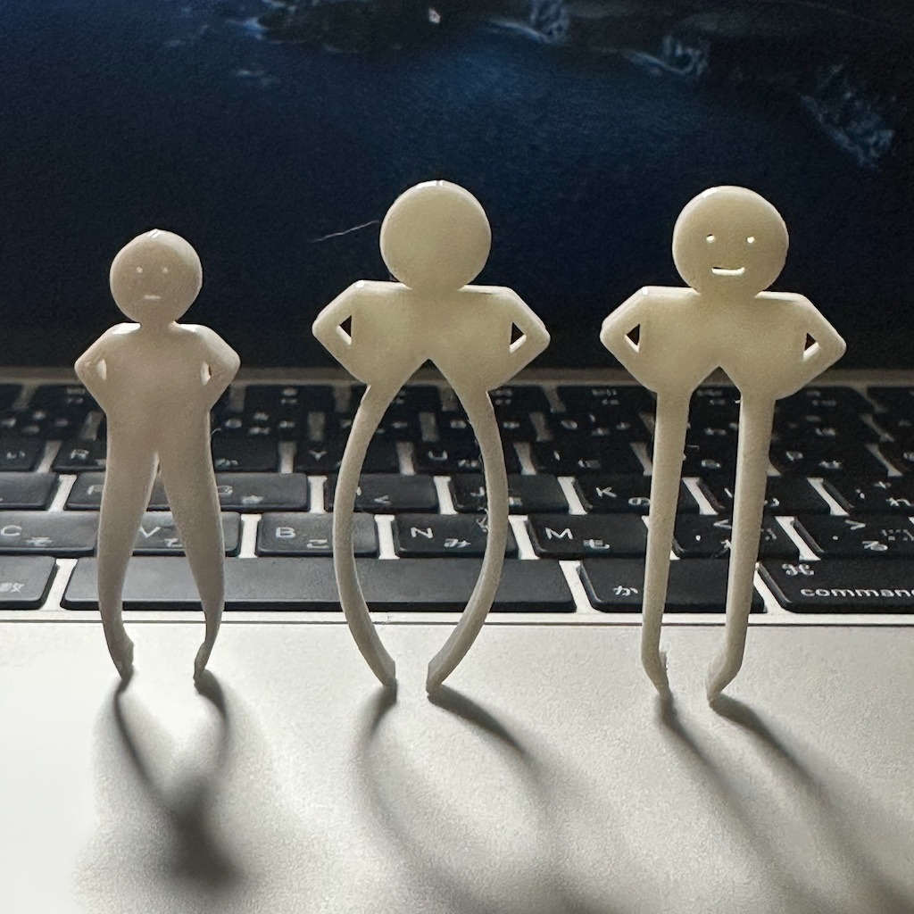
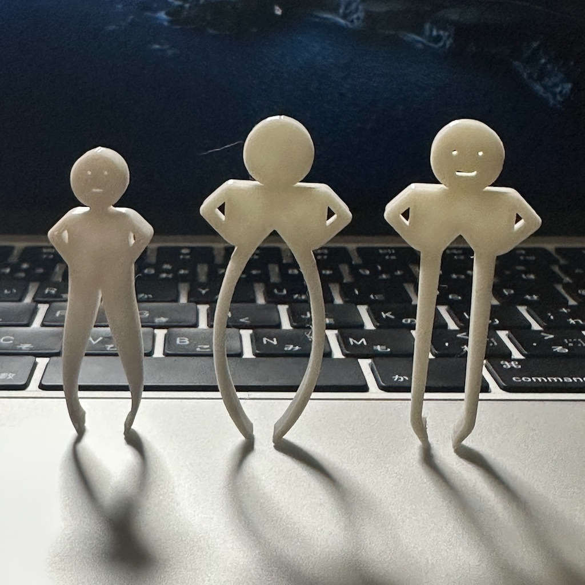
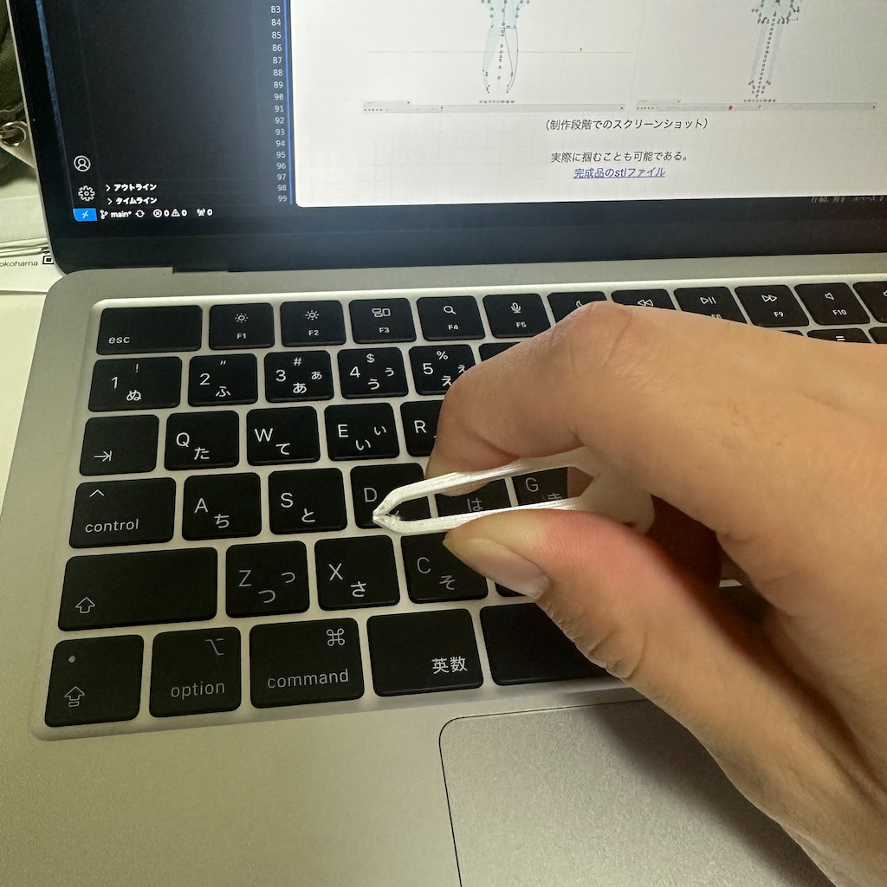
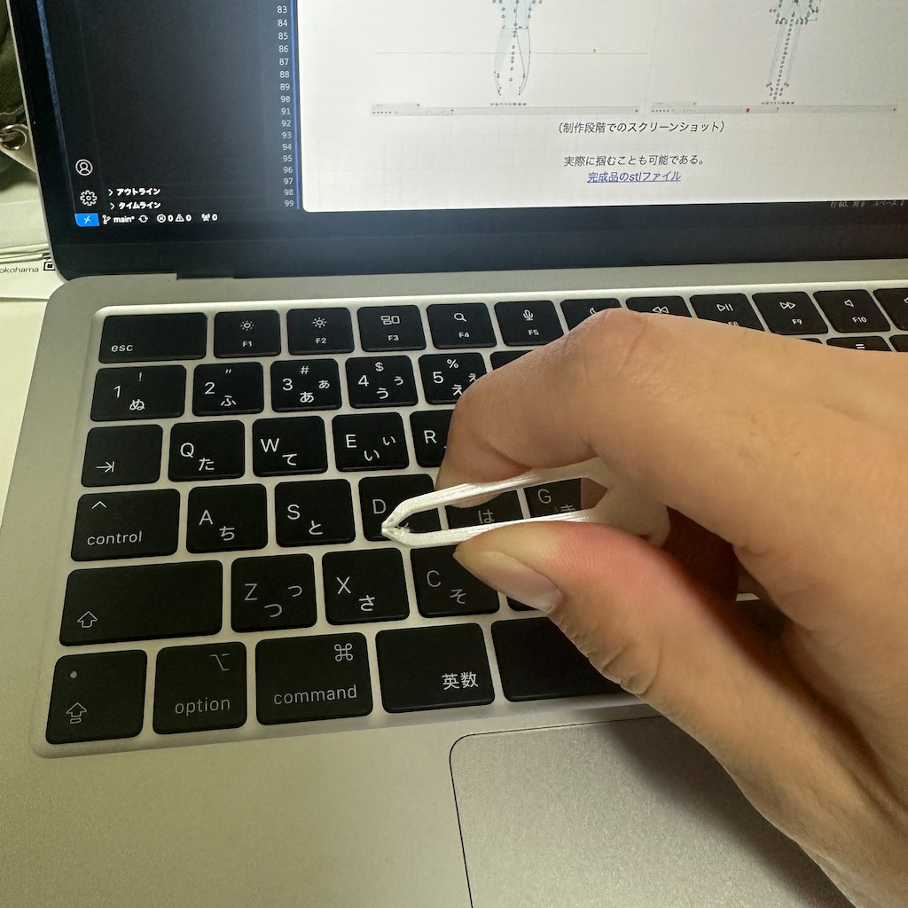

 
作品名は
作品名は
「ピンセットだって美脚になりたい」
実はこれは３号機で失敗を繰り返してやっと出来上がったものである。以下の画像は進化の過程である。

左から、１号機・・・足の付け根の部分が太すぎてそもそも掴む動作が不可能
２号機・・・足のカーブが強すぎて掴みづらい
３号機・・・足の太さもカーブの具合も完璧

左から、１号機・・・足の付け根の部分が太すぎてそもそも掴む動作が不可能
２号機・・・足のカーブが強すぎて掴みづらい
３号機・・・足の太さもカーブの具合も完璧


（制作段階でのスクリーンショット）
実際に掴むことも当然可能である。

